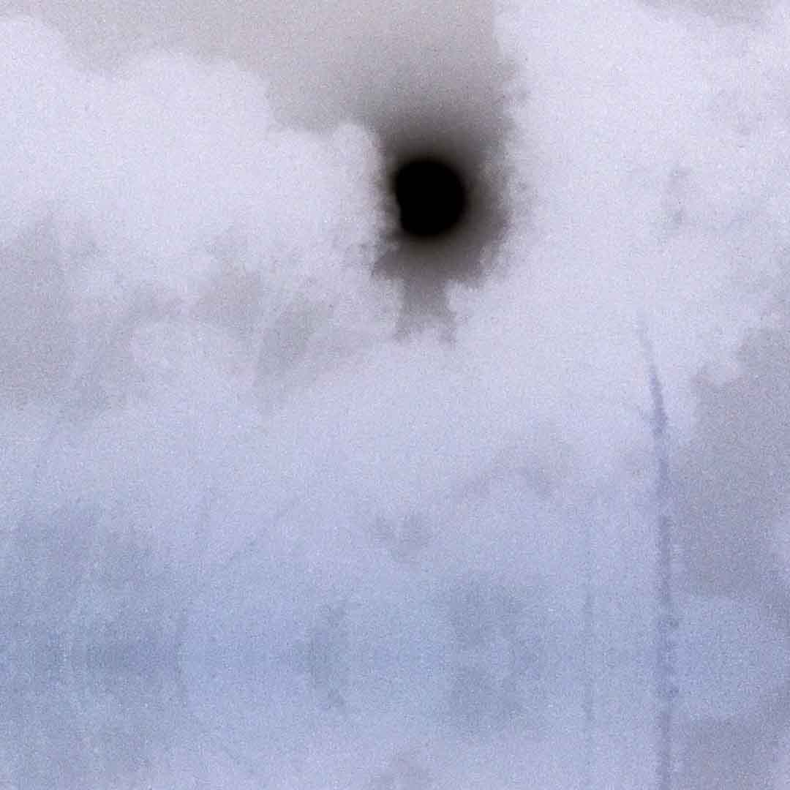

I n f o
a b o u t m e

Zhengzhou Huang is an artist currently based in Los Angeles.
Having spent much of his time in Chongqing, a city full of fog,
light pollution and screens,

he is influenced by blurriness, projections,
and the cliche of city lights over dark sky.
He is interested in simulation of experiences created with layers of objects, images,
and projections.
He likes to think about the digitality of screens,
digital body and the wired space of users, data and avatars.
Many of his works come from speculations on transformation of media, objects, body,
online and offline.
Originally working in video installations and interactive sculptures,
Zhengzhou extends his practice to games, immersive videos, and web-based projects.